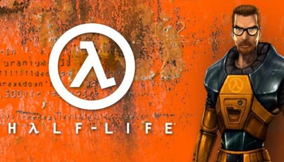
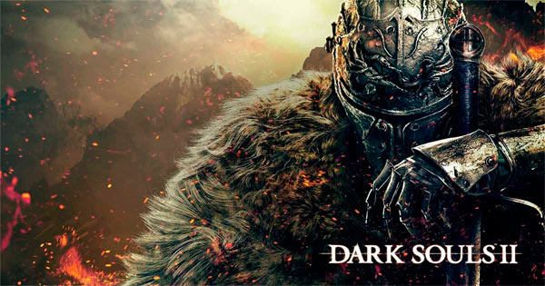

La quinta parte de Grand Theft Auto para PC vuelve a la costa oeste americana, ambientándose en la ciudad de Los Santos (Los Ángeles) y sus alrededores, con una historia ambientada en la actualidad, especialmente en las consecuencias de la crisis económica. Está protagonizada por Michael, Franklin y Trevor, tres criminales con diferentes habilidades, pudiendo cambiar de personaje en todo momento y vivir cada una de sus vidas, así como aprovechar sus habilidades en las misiones.
Basado en el famoso y alabado juego de rol clásico de lápiz, papel y dados, CD Projekt RED cambia la espada y brujería de The Witcher por los entornos futuristas, las armas de fuego y láser y los implantes biomecánicos de Cyberpunk 2077, un RPG de acción para PC, PlayStation 4, Xbox One y Stadia de mundo abierto basado en el universo del clásico juego de rol de Mike Pondsmith, Cyberpunk 2020.

Alyx, desarrollado y editado por Valve para PC, es una aventura de acción en primera persona especialmente creada para la realidad virtual de Valve Index, HTC Vive, Oculus Rift y Windows Mixed Reality. Es la historia de una lucha imposible contra una raza alienígena cruel conocida como la Alianza, situada entre los eventos de Half-Life y Half-Life 2. Jugando como Alyx Vance, eres la única oportunidad de supervivencia de la humanidad.

ercera entrega de la saga Dark Souls para PC, Xbox One y PS4, que combina elementos de los juegos de aventura y acción y tercera persona, con tintes de rol para mejorar a nuestro personaje. El tercer capítulo de la serie de títulos de From Software será el primero en ser desarrollado íntegramente en consolas como Xbox One y PlayStation 4. En esta nueva entrega, visitaremos el oscuro y amplio reino de Lothric, aprenderemos nuevas habilidades vinculadas a las armas que empuñemos y combatiremos contra duras y ásperas criaturas, que en esta ocasión serán más peligrosas y rápidas que nunca.